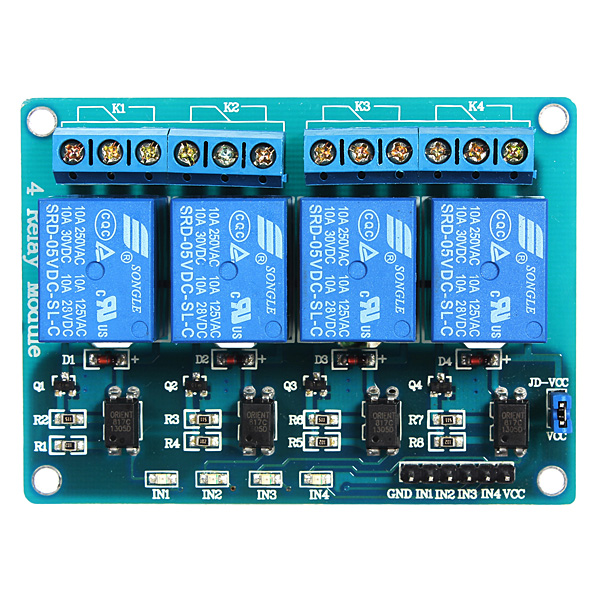
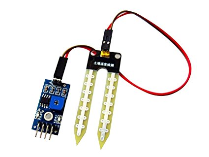
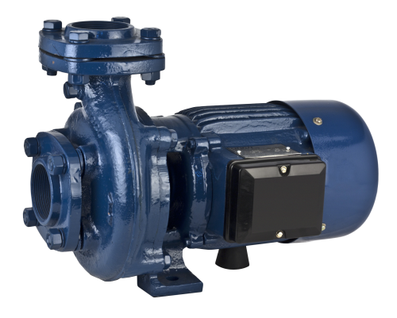
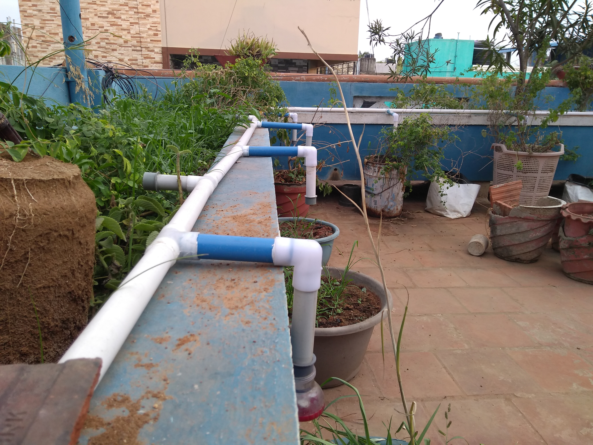
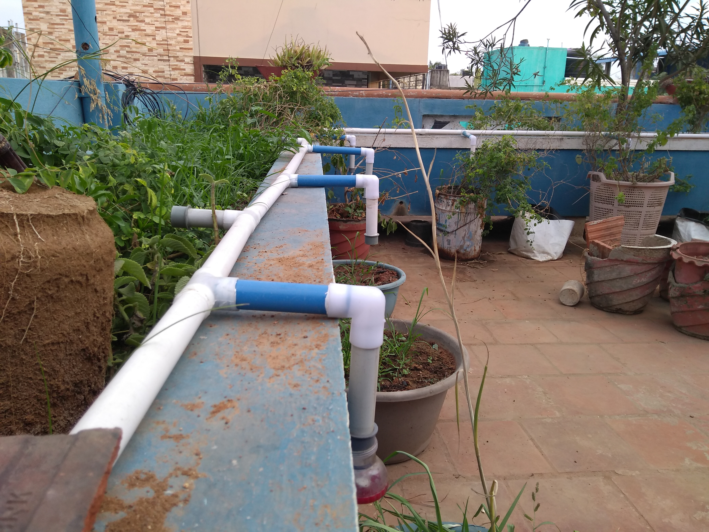
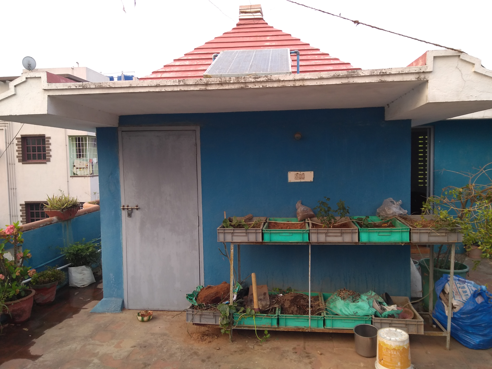
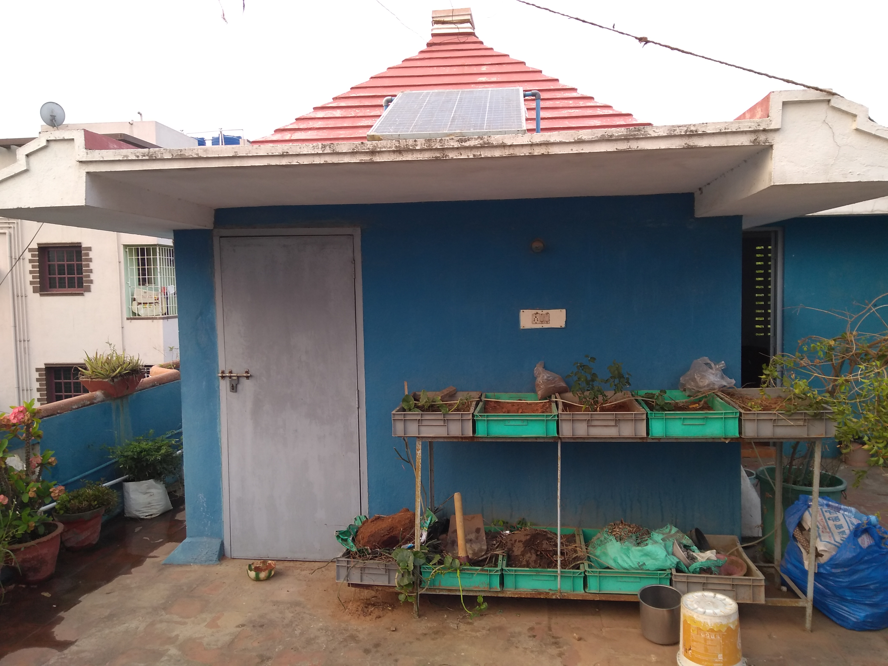

We’ll start with the most basic reason why growing plants is so important: We can’t eat, drink, or
breathe without them around. No plants = No life. Everyone will have some plants or may have
roof garden in their houses. You can and you will water them. But what if when you go out for
vacation, basically what would be the state of the plants when you are not with them.
During summers, most people are too lazy to water the potted plants on their rooftop gardens every day.
Explained in this section is a simple and exciting automatic plant watering system that you can build yourself in just a few hours.
It is an Arduino based automatic plant watering system that uses a soil moisture sensor.
The some of the important components for the making of this project is as follows:
Arduino consists of both a physical programmable circuit board (often referred to as a microcontroller)
and a piece of software, or IDE (Integrated Development Environment) that runs on your computer,
used to write and upload computer code to the physical board..
A relay is an electrically operated switch.
Many relays use an electromagnet to mechanically operate a switch,
but other operating principles are also used, such as solid-state relays.

Soil moisture sensors measure the volumetric water content in soil.
The relation between the measured property and soil moisture must be calibrated
and may vary depending on environmental factors such as soil type, temperature, or electric conductivity.
Soil moisture sensors are used in numerous research applications, e.g. in agricultural science and horticulture including irrigation planning,
climate research, or environmental science including solute transport studies and as auxiliary sensors for soil respiration measurements.

A pump is a device that moves fluids (liquids or gases), or sometimes slurries, by mechanical action.
Pumps operate by some mechanism (typically reciprocating or rotary), and consume energy to perform mechanical work by moving the fluid.

 

 
